Hier sind die 120 neuesten von 348 Materialien. Alle im Material-Finder ansehen

Lesespaziergang Nikolausabend: Stiefel, Sterne, Plätzchenduft – 8 Stationen in 3 Lesestufen mit Hörfassung (Klasse 1–2, DaZ)

Lesespaziergang Tiere im Winter: Pit, der Igel, sucht ein Bett – 8 Stationen in 3 Lesestufen mit Hörfassung (Klasse 1–2, DaZ)

Lesespaziergang Laternenzeit: Linas Laterne – 8 Stationen in 3 Lesestufen mit Hörfassung (Klasse 1–2, DaZ)

Halloween-Ziehkarten – Präpositionen sichtbar machen: über, vor, neben, auf, 3-fach differenziert (Klasse 1/2, DaZ)

Halloween-Hüpffiguren – 6 Bastelvorlagen mit Federkugel, Steckbrief und Geschichte, 3-fach differenziert (Klasse 1/2)

Lesespur: Wünsche und Bedürfnisse: was ich wirklich brauche – Lesespurgeschichte mit Rätseln (Klasse 1)

Lesespur: Schlaflieder: Musik zum Träumen – Lesespurgeschichte mit Rätseln (Klasse 1)
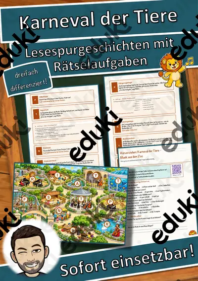
Lesespur: Karneval der Tiere: Musik aus dem Zoo – Lesespurgeschichte mit Rätseln (Klasse 1)

Lesespur: Kinderlieder und Spiellieder: Singen macht Spaß – Lesespurgeschichte mit Rätseln (Klasse 1)

Lesespur: Winterklänge: Musik im Schnee – Lesespurgeschichte mit Rätseln (Klasse 1)
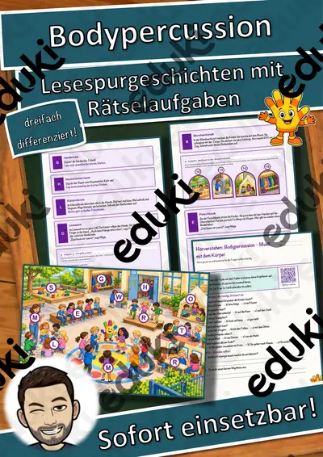
Lesespur: Bodypercussion: Musik mit dem Körper – Lesespurgeschichte mit Rätseln (Klasse 1)

Lesespur: Wir helfen einander – Lesespurgeschichte mit Rätseln (Klasse 1)

Lesespur: Fair teilen und abgeben – Lesespurgeschichte mit Rätseln (Klasse 1)

Lesespur: Zusammen in der Klasse – Lesespurgeschichte mit Rätseln (Klasse 1)

Materialpaket Wort-Bild-Karten Grundschule Klasse 1–4 – Essen und Einkaufen: 3 Themen, mit Lösungsseite

Materialpaket Wort-Bild-Karten Grundschule Klasse 1–4 – Jahreszeiten und Feste: 4 Themen, mit Lösungsseite

Materialpaket Wort-Bild-Karten Grundschule Klasse 1–4 – Ich und Alltag: 5 Themen, mit Lösungsseite

Materialpaket Wort-Bild-Karten Grundschule Klasse 1–4 – Fantasie und Abenteuer: 5 Themen, mit Lösungsseite

Materialpaket Wort-Bild-Karten Grundschule Klasse 1–4 – Tiere und Natur: 7 Themen, mit Lösungsseite
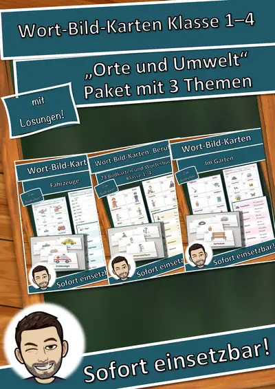
Materialpaket Wort-Bild-Karten Grundschule Klasse 1–4 – Orte und Umwelt: 3 Themen, mit Lösungsseite

Materialpaket Wortgitter Grundschule Klasse 1–4 – Jahreszeiten und Feste: 5 Themen, dreifach differenziert, mit Lösungen

Materialpaket Wortgitter Grundschule Klasse 1–4 – Fantasie und Abenteuer: 4 Themen, dreifach differenziert, mit Lösungen

Materialpaket Wortgitter Grundschule Klasse 1–4 – Orte und Umwelt: 3 Themen, dreifach differenziert, mit Lösungen
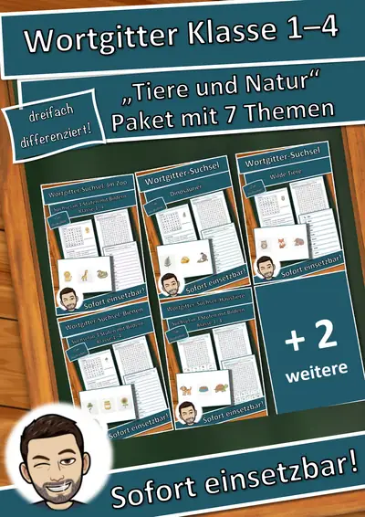
Materialpaket Wortgitter Grundschule Klasse 1–4 – Tiere und Natur: 7 Themen, dreifach differenziert, mit Lösungen

Materialpaket Wortgitter Grundschule Klasse 1–4 – Essen und Einkaufen: 3 Themen, dreifach differenziert, mit Lösungen

Materialpaket Wortgitter Grundschule Klasse 1–4 – Ich und Alltag: 6 Themen, dreifach differenziert, mit Lösungen
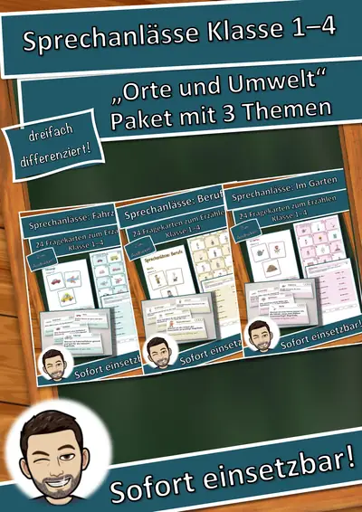
Materialpaket Sprechanlässe Grundschule Klasse 1–4 – Orte und Umwelt: 3 Themen, dreifach differenziert, mit Musterantworten
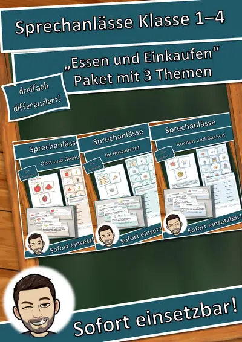
Materialpaket Sprechanlässe Grundschule Klasse 1–4 – Essen und Einkaufen: 3 Themen, dreifach differenziert, mit Musterantworten

Materialpaket Sprechanlässe Grundschule Klasse 1–4 – Tiere und Natur: 7 Themen, dreifach differenziert, mit Musterantworten

Materialpaket Sprechanlässe Grundschule Klasse 1–4 – Jahreszeiten und Feste: 5 Themen, dreifach differenziert, mit Musterantworten

Materialpaket Sprechanlässe Grundschule Klasse 1–4 – Fantasie und Abenteuer: 5 Themen, dreifach differenziert, mit Musterantworten
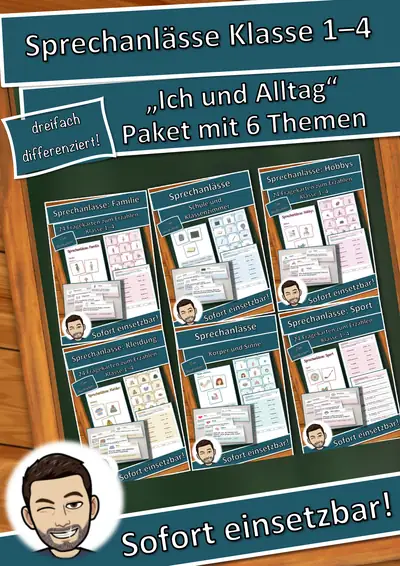
Materialpaket Sprechanlässe Grundschule Klasse 1–4 – Ich und Alltag: 6 Themen, dreifach differenziert, mit Musterantworten
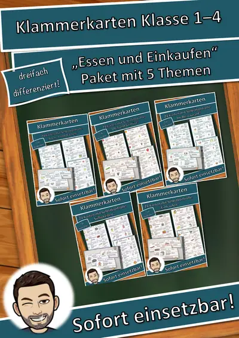
Materialpaket Klammerkarten Grundschule Klasse 1–4 – Essen und Einkaufen: 5 Themen, dreifach differenziert, mit Lösungen
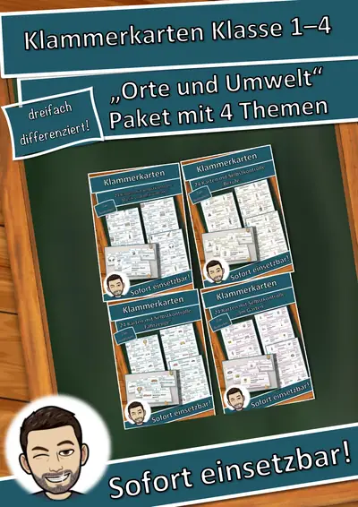
Materialpaket Klammerkarten Grundschule Klasse 1–4 – Orte und Umwelt: 4 Themen, dreifach differenziert, mit Lösungen

Materialpaket Klammerkarten Grundschule Klasse 1–4 – Jahreszeiten und Feste: 4 Themen, dreifach differenziert, mit Lösungen

Materialpaket Klammerkarten Grundschule Klasse 1–4 – Ich und Alltag: 7 Themen, dreifach differenziert, mit Lösungen
Materialpaket Klammerkarten Grundschule Klasse 1–4 – Fantasie und Abenteuer: 5 Themen, dreifach differenziert, mit Lösungen
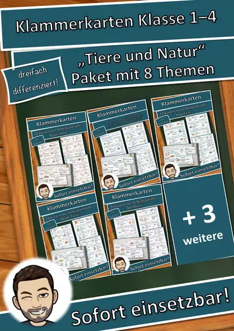
Materialpaket Klammerkarten Grundschule Klasse 1–4 – Tiere und Natur: 8 Themen, dreifach differenziert, mit Lösungen

Materialpaket Himmel und Hölle Grundschule Klasse 1–4 – Fantasie und Abenteuer: 5 Themen, dreifach differenziert, mit Lösungen

Materialpaket Himmel und Hölle Grundschule Klasse 1–4 – Essen und Einkaufen: 5 Themen, dreifach differenziert, mit Lösungen

Materialpaket Himmel und Hölle Grundschule Klasse 1–4 – Orte und Umwelt: 6 Themen, dreifach differenziert, mit Lösungen

Materialpaket Himmel und Hölle Grundschule Klasse 1–4 – Tiere und Natur: 8 Themen, dreifach differenziert, mit Lösungen
Materialpaket Himmel und Hölle Grundschule Klasse 1–4 – Jahreszeiten und Feste: 5 Themen, dreifach differenziert, mit Lösungen

Materialpaket Himmel und Hölle Grundschule Klasse 1–4 – Ich und Alltag: 7 Themen, dreifach differenziert, mit Lösungen

Himmel und Hölle: Im Wald – Gratis-Probe
Himmel und Hölle: In der Stadt – Gratis-Probe

Klammerkarten: In der Stadt – Gratis-Probe

Himmel und Hölle: Süßigkeiten – Gratis-Probe
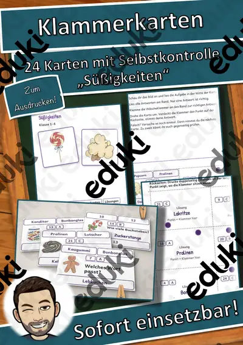
Klammerkarten: Süßigkeiten – Gratis-Probe

Himmel und Hölle: Gefühle – Gratis-Probe

Klammerkarten: Gefühle – Gratis-Probe

Himmel und Hölle: Musik und Instrumente – Gratis-Probe

Klammerkarten: Musik und Instrumente – Gratis-Probe

Himmel und Hölle: Hygiene und Körperpflege – Gratis-Probe
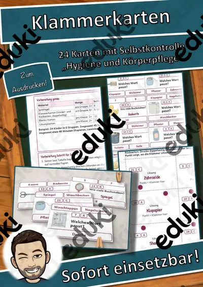
Klammerkarten: Hygiene und Körperpflege – Gratis-Probe
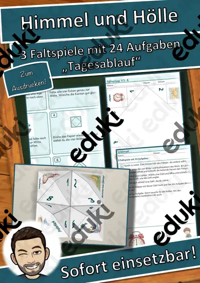
Himmel und Hölle: Tagesablauf – Gratis-Probe

Klammerkarten: Tagesablauf – Gratis-Probe

Himmel und Hölle: Insekten und Krabbeltiere – Gratis-Probe

Klammerkarten: Insekten und Krabbeltiere – Gratis-Probe
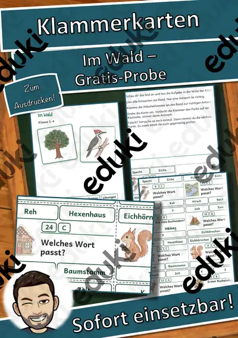
Klammerkarten: Im Wald – Gratis-Probe

Himmel und Hölle: Einkaufen – Gratis-Probe

Klammerkarten: Einkaufen – Gratis-Probe

Himmel und Hölle: In der Stadt – Himmel und Hölle – Klasse 1–4

Himmel und Hölle: Süßigkeiten – Himmel und Hölle – Klasse 1–4

Klammerkarten: Süßigkeiten – Klammerkarten – Klasse 1–4

Himmel und Hölle: Gefühle – Himmel und Hölle – Klasse 1–4

Klammerkarten: Gefühle – Klammerkarten – Klasse 1–4

Himmel und Hölle: Musik und Instrumente – Himmel und Hölle – Klasse 1–4

Klammerkarten: Musik und Instrumente – Klammerkarten – Klasse 1–4
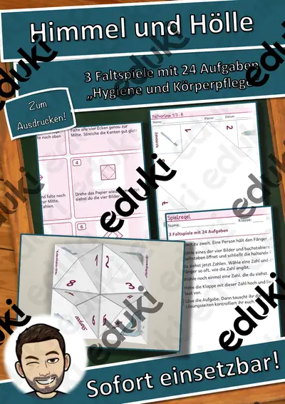
Himmel und Hölle: Hygiene und Körperpflege – Himmel und Hölle – Klasse 1–4

Klammerkarten: Hygiene und Körperpflege – Klammerkarten – Klasse 1–4

Himmel und Hölle: Tagesablauf – Himmel und Hölle – Klasse 1–4

Klammerkarten: Tagesablauf – Klammerkarten – Klasse 1–4

Himmel und Hölle: Insekten und Krabbeltiere – Himmel und Hölle – Klasse 1–4
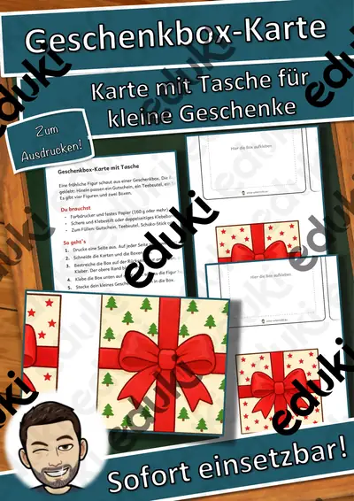
Geschenkbox-Karte mit Tasche: Druckvorlage Weihnachten mit 4 Figuren für Gutscheine (Klasse 1–4)
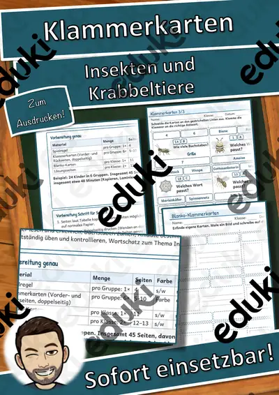
Klammerkarten: Insekten und Krabbeltiere – Klammerkarten – Klasse 1–4

Himmel und Hölle: Im Wald – Himmel und Hölle – Klasse 1–4

Klammerkarten: Im Wald – Klammerkarten – Klasse 1–4

Himmel und Hölle: Einkaufen – Himmel und Hölle – Klasse 1–4

Klammerkarten: Einkaufen – Klammerkarten – Klasse 1–4

Himmel und Hölle: Im Restaurant – Himmel und Hölle – Klasse 1–4

Klammerkarten: Im Restaurant – Klammerkarten – Klasse 1–4

Himmel und Hölle: Familie – Himmel und Hölle – Klasse 1–4
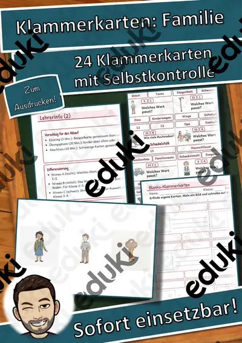
Klammerkarten: Familie – Klammerkarten – Klasse 1–4

Himmel und Hölle: Wilde Tiere – Himmel und Hölle – Klasse 1–4
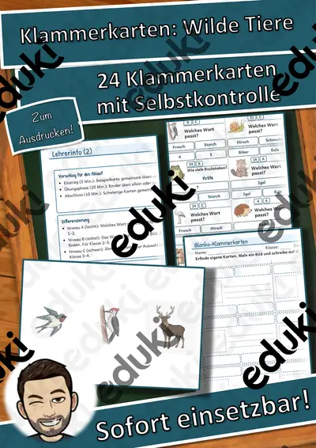
Klammerkarten: Wilde Tiere – Klammerkarten – Klasse 1–4

Himmel und Hölle: Fahrzeuge – Himmel und Hölle – Klasse 1–4

Klammerkarten: Fahrzeuge – Klammerkarten – Klasse 1–4

Himmel und Hölle: Kleidung – Himmel und Hölle – Klasse 1–4
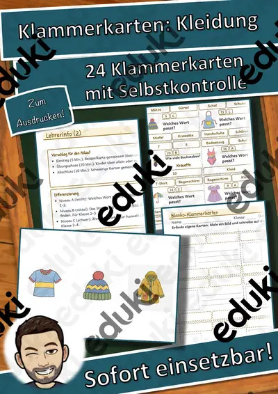
Klammerkarten: Kleidung – Klammerkarten – Klasse 1–4

Himmel und Hölle: Im Zoo – Himmel und Hölle – Klasse 1–4

Klammerkarten: Im Zoo – Klammerkarten – Klasse 1–4

Himmel und Hölle: Ostern – Himmel und Hölle – Klasse 1–4

Klammerkarten: Ostern – Klammerkarten – Klasse 1–4

Himmel und Hölle: Frühling – Himmel und Hölle – Klasse 1–4

Klammerkarten: Frühling – Klammerkarten – Klasse 1–4

Himmel und Hölle: Sommer – Himmel und Hölle – Klasse 1–4
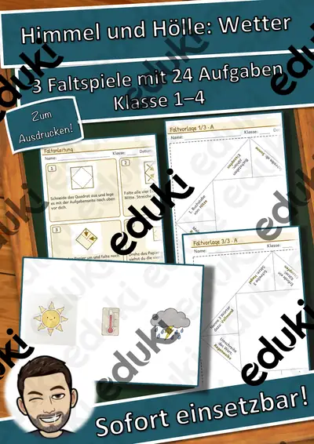
Himmel und Hölle: Wetter – Himmel und Hölle – Klasse 1–4

Klammerkarten: Wetter – Klammerkarten – Klasse 1–4

Himmel und Hölle: Bienen – Himmel und Hölle – Klasse 1–4

Klammerkarten: Bienen – Klammerkarten – Klasse 1–4

Himmel und Hölle: Kochen und Backen – Himmel und Hölle – Klasse 1–4

Klammerkarten: Kochen und Backen – Klammerkarten – Klasse 1–4

Klammerkarten: Obst und Gemüse – Klammerkarten – Klasse 1–4
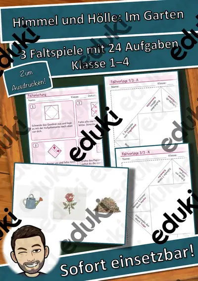
Himmel und Hölle: Im Garten – Himmel und Hölle – Klasse 1–4

Klammerkarten: Im Garten – Klammerkarten – Klasse 1–4

Himmel und Hölle: Berufe – Himmel und Hölle – Klasse 1–4
Klammerkarten: Berufe – Klammerkarten – Klasse 1–4

Klammerkarten: Sommer – Klammerkarten – Klasse 1–4

Himmel und Hölle: Obst und Gemüse – Himmel und Hölle – Klasse 1–4

Escape Room Sprachgebrauch Klasse 1 – Deutsch Klasse 1 Grundschule: 6 Stationen, 2 Schlösser
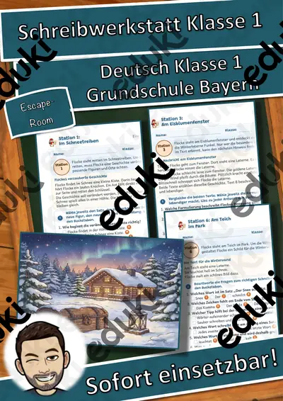
Escape Room Schreibwerkstatt Klasse 1 – Deutsch Klasse 1 Grundschule: 6 Stationen, 2 Schlösser

Escape Room Lesen & Medien Klasse 1 – Deutsch Klasse 1 Grundschule: 6 Stationen, 2 Schlösser

Geschenkkarten und Anhänger Weihnachten: 4 Klappkarten, 8 Anhänger und Aufkleb-Figuren (Klasse 1–4)
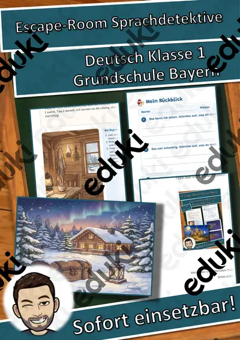
Escape Room Sprachdetektive – Deutsch Klasse 1 Grundschule: 6 Stationen, 2 Schlösser

Escape Room Schreibwerkstatt – Deutsch Klasse 1 Grundschule: 6 Stationen, 2 Schlösser

Escape Room Lesefähigkeiten stärken – Deutsch Klasse 1 Grundschule: 6 Stationen, 2 Schlösser

Escape Room Sprechen und Zuhören – Deutsch Klasse 1 Grundschule: 6 Stationen, 2 Schlösser

Ich habe, wer hat? Hobbys – Lese-Schleifen – Klasse 1–4
Wortgitter-Suchsel: Ritter und Burg – Wortgitter – Klasse 1–4
Keine Materialien gefunden – versuch einen anderen Suchbegriff oder Filter.